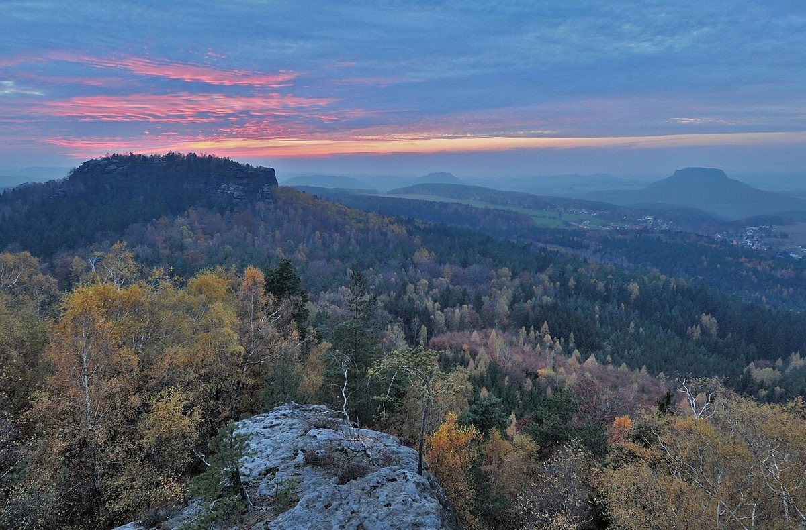

Découverte de la Suisse saxonne : Un joyau naturel en Allemagne

La Suisse saxonne, ou Sächsische Schweiz en allemand, est une région naturelle d’une beauté à couper le souffle, située à la frontière entre l’Allemagne et la République tchèque. Avec ses formations rocheuses spectaculaires, ses forêts luxuriantes et ses villages pittoresques, cette destination est un véritable paradis pour les amoureux de la nature et les randonneurs. Si vous prévoyez de découvrir cette région, voici un guide complet pour vous aider à organiser votre voyage.
Comment s’y rendre ?
La Suisse saxonne est facilement accessible en train ou en voiture depuis des villes comme Dresde, Prague ou Berlin. Si vous voyagez en train, la gare de Bad Schandau est un point d’entrée pratique pour explorer la région. En voiture, les routes sinueuses offrent des vues panoramiques sur les paysages, mais soyez prudent, surtout en hiver.
Quand visiter ?
Le meilleur moment pour visiter la Suisse saxonne est entre le printemps et l’automne. Les mois d’avril à octobre offrent des températures agréables et une nature en pleine floraison. L’été peut être un peu plus fréquenté, mais c’est aussi la période idéale pour les activités de plein air. Si vous préférez un cadre plus calme, l’automne est parfait pour ses couleurs chatoyantes et ses températures douces.
Les incontournables de la Suisse saxonne
1. Le Bastei et le pont de Bastei
Le Bastei est l’un des sites les plus emblématiques de la Suisse saxonne. Ce pont de pierre naturel offre une vue imprenable sur les formations rocheuses et la vallée de l’Elbe. Une randonnée jusqu’au Bastei est un must pour tout visiteur.
2. Le parc national de la Suisse saxonne
Ce parc national est un véritable trésor pour les amateurs de randonnée. Avec plus de 700 kilomètres de sentiers, vous pourrez explorer des gorges, des falaises et des forêts magnifiques. Les sentiers sont bien balisés, ce qui facilite la navigation.
3. Le château de Königstein
Perché sur un plateau rocheux, le château de Königstein est une forteresse impressionnante avec des siècles d’histoire. La visite du château offre non seulement un aperçu du passé, mais aussi des vues spectaculaires sur les environs.
4. La ville de Rathen
Ce petit village est parfait pour une escapade pittoresque. Rathen est le point de départ idéal pour explorer les environs, notamment le Bastei et les sentiers de randonnée locaux.
5. Le Schrammsteine
Pour les aventuriers, les falaises de Schrammsteine offrent des escalades et des randonnées épiques. Les vues depuis le sommet sont tout simplement inoubliables.
Que manger en Suisse saxonne ?
La cuisine de la région est riche et copieuse. Ne manquez pas de goûter aux spécialités locales comme le Sauerbraten (pot-au-feu mariné), les Kartoffelklöße (boulettes de pomme de terre) et les desserts comme le Dresdner Stollen (un gâteau aux fruits secs). Les restaurants traditionnels et les auberges locales sont parfaits pour découvrir ces plats.
En conclusion, la Suisse saxonne est une destination magique qui offre une combinaison parfaite de paysages spectaculaires, d’histoire et de culture. Que vous soyez un randonneur aguerri ou simplement à la recherche d’un cadre paisible, cette région allemande saura vous charmer.
Haiktec
- Le Guide Essentiel du Voyage en Bavière et dans les Alpes : 7 Itinéraires Incontournables pour Découvrir les Trésors Cachés
- Planificateur de Révisions & Suivi des Examens pour Étudiants
- Le Petit Guide du Succès pour les Petits Restaurants et Cafés
Text mit KI erstellt und automatisch geprueft.